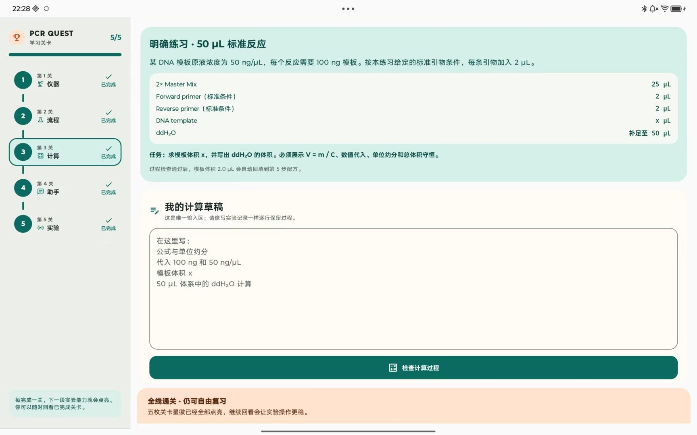
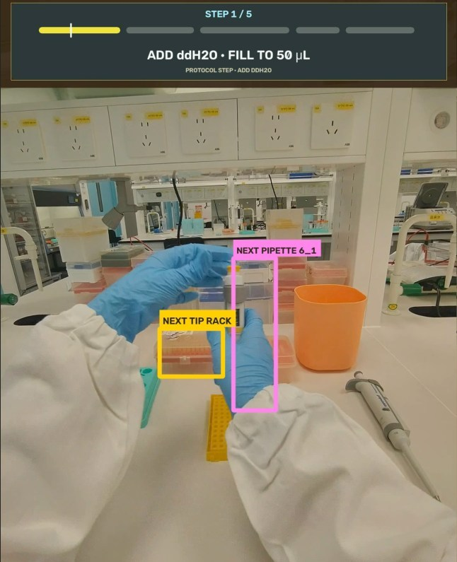
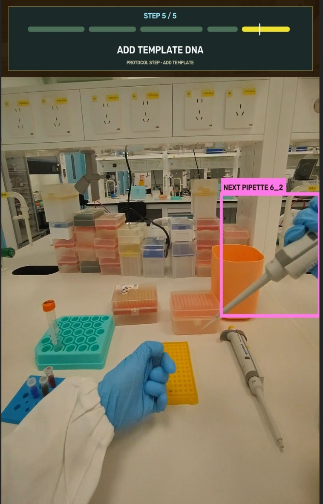
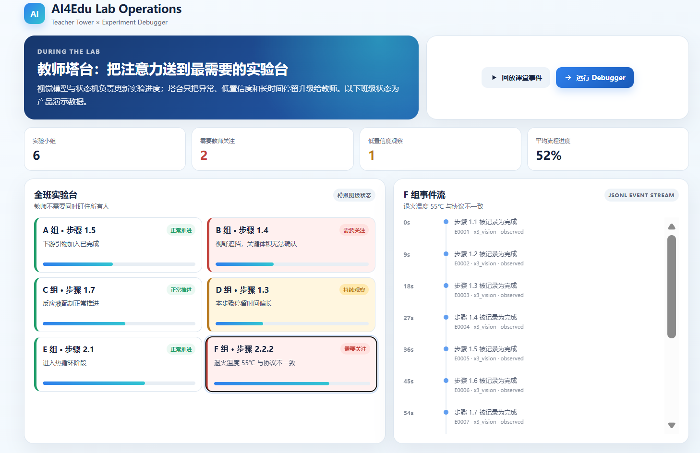
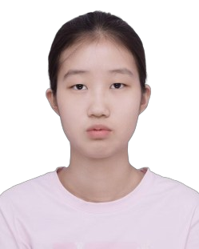

学生平板
带着准备与问题，进入实验。
把器材知识、流程预习、计算草稿与问答放进同一学习任务，保留推导过程，帮助学生形成自己的判断。
学生端原型；当前问答采用本地规则，模型服务为后续接入方向。

实验台第一视角，BP 原型演示同一间实验室里，每张实验台都在不同的进度上。关键失误可能直到结果出现时才被发现。
以下图片来自项目 BP，呈现各终端的产品原型与设计。

把器材知识、流程预习、计算草稿与问答放进同一学习任务，保留推导过程，帮助学生形成自己的判断。
学生端原型；当前问答采用本地规则，模型服务为后续接入方向。

通过第一视角识别对象与动作，结合实验流程跟踪步骤状态；需要时提示目标器材，并将事件同步到平板。
BP 联调演示。截图展示原型流程，并非本站正在运行的实验。

按求助、进度与待确认事项组织课堂信息，查看关键事件和上下文，记录教师确认、学生修正与后续处理。
教师端设计与演示数据。系统标记供教师复核，保留人工判断。
检查先修知识，理解目标与风险，预习步骤并独立完成计算推导。
识别对象和动作，跟踪流程状态，分层提示；低置信度与冲突事件升级教师。
回放关键事件，复盘错误与恢复路径，用过程性评价形成下一次训练建议。
首发场景
以教师可锁定的标准流程为起点，关注多步移液和试剂匹配中的关键事件。
首版优先验证可观察事件与过程支持价值，不将最终扩增结果等同于平台效果。
将视觉感知、步骤时序与 protocol state 连接起来，使提示有上下文、事件可追溯。
| 模型组合 | Accuracy | Edit | F1@0.5 |
|---|---|---|---|
| 自研模型 | 79.94% | 98.46% | 76.89% |
| MS-TCN / VideoMAE | 71.53% | 43.70% | 44.35% |
| ASFormer / I3D | 33.44% | 49.36% | 14.41% |
BP 报告的阶段性实验结果。数据集、评测划分和复现代码未在材料中完整提供，不能据此推断真实课堂效果或普遍优于其他方法。Accuracy 衡量逐时间点分类；Edit 衡量序列相似度；F1@0.5 衡量片段检测。
优先选择 SOP 稳定、关键事件可观察、教师愿意共创的任务。
明确实验任务、学习目标与首批高价值事件。
确定参与者、试用安排与观察指标，留下试用记录。
核对设备、网络和记录范围，评估教师负担与过程支持效果。
LabMate AI HKUST(GZ)
11 位成员共同连接实验教学、AI 研究、软件工程与产品验证，让实验室里的问题得到具体回应。
对齐算法可行性、真实实验流程与教学目标。
多模态感知、系统建模与步骤检测，指导算法可行性评估和测试验证。
指导实验 SOP、教学目标、提示边界、过程评价与课程试点。
指导多模态感知、边缘计算、系统可靠性、知识产权与成果转化。
将实验现场的需求，推进到可测试、可迭代的原型。
将教学痛点转化为产品定义，统筹团队、资源与项目推进。
推进核心算法、时序理解、产品技术方案与系统集成。
连接 AR 终端与 AI 服务，负责数据接口、部署测试和 MVP 迭代。
连接湿实验与算法，参与流程建模、动作识别、数据标注和原型验证。
验证与实现物体识别、手部关键点识别和实验步骤判断。
参与多模态智能应用、交互设计、内容表达与用户运营。

推进教师访谈、采购路径、商业验证与合作材料。
连接学生、教师与使用反馈，推进需求研究、试点和商业模式验证。
把课程目标、真实 SOP 与学生容易卡住的环节对齐。
连接对象识别、动作理解、协议状态与实时部署。
用原型、课堂反馈与部署测试推动产品迭代。
明确试用范围、验收依据与学校落地条件。
LabMate AI Jianwei Tech
Connect student tablets, glasses and teacher tools to support preparation, hands-on work and reflection.
Every bench moves at its own pace. A critical mistake may remain hidden until the result appears.
Images from the project BP show product prototypes and interface designs.
Keep equipment knowledge, procedure previews, calculation drafts and questions in one learning task, preserving students’ reasoning.
Student prototype. Current Q&A uses local rules; model services are planned.
Use first-person object and action recognition to track protocol states, highlight relevant equipment and synchronize events with the tablet.
Integration demonstration from the BP, not a live experiment running on this site.
Organize help requests, progress and items awaiting confirmation. Review event context and record teacher decisions, corrections and follow-up.
Teacher design with demonstration data. System flags support teacher review and judgment.
Check prerequisites, understand objectives and risks, preview steps and work through calculations.
Recognize objects and actions, track protocol state and layer prompts. Escalate low-confidence or conflicting events.
Review key events, errors and recovery paths. Use process assessment to inform the next practice session.
Initial use case
Begin with a teacher-controlled protocol and key events in multi-step pipetting and reagent matching.
The first release prioritizes observable events and process support; amplification outcomes alone do not measure platform effectiveness.
Connect visual perception, action sequences and protocol states so prompts have context and events can be reviewed.
| Model combination | Accuracy | Edit | F1@0.5 |
|---|---|---|---|
| In-house model | 79.94% | 98.46% | 76.89% |
| MS-TCN / VideoMAE | 71.53% | 43.70% | 44.35% |
| ASFormer / I3D | 33.44% | 49.36% | 14.41% |
Preliminary results reported in the BP. Full dataset, evaluation split and reproduction details were not provided, so these do not establish classroom effectiveness or general superiority. Accuracy measures time-point classification, Edit sequence similarity, and F1@0.5 segment detection.
Begin with stable SOPs, observable events and teachers willing to co-design.
Agree on the task, learning goals and first high-value events.
Define participants, scheduling and observation criteria; record the trial.
Review devices, network and recording scope; assess teacher workload and process support.
LabMate AI HKUST(GZ)
Eleven people connect laboratory teaching, AI research, software engineering and product validation around the needs of real classrooms.
Align algorithm feasibility, real experimental practice and learning objectives.
Guides multimodal sensing, system modeling, step detection and algorithm validation.
Advises on laboratory SOPs, learning objectives, prompt boundaries, process assessment and course pilots.
Advises on multimodal sensing, edge computing, system reliability, intellectual property and technology transfer.
Turn needs from the laboratory into prototypes that can be tested and improved.
Turns teaching needs into product direction and coordinates the team, resources and delivery.
Develops core algorithms, temporal understanding, technical solutions and system integration.
Connects AR devices and AI services through data interfaces, deployment testing and MVP iteration.
Connects wet-lab practice and algorithms through workflow modeling, action recognition, annotation and prototype validation.
Validates and implements object recognition, hand keypoints and experimental-step determination.
Contributes to multimodal applications, interaction design, content and user operations.
Develops teacher interviews, procurement pathways, commercial validation and partnership materials.
Connects students, teachers and usage feedback with requirements research, pilots and business-model validation.
Align course objectives and real SOPs with the points where learners need support.
Connect object recognition, action understanding, protocol states and real-time deployment.
Refine the product through prototypes, classroom feedback and deployment tests.
Define trial scope, acceptance criteria and the conditions for campus deployment.
Profiles above come from the two BPs. GitHub activity records contributions; native repository permissions determine access.
View contributions